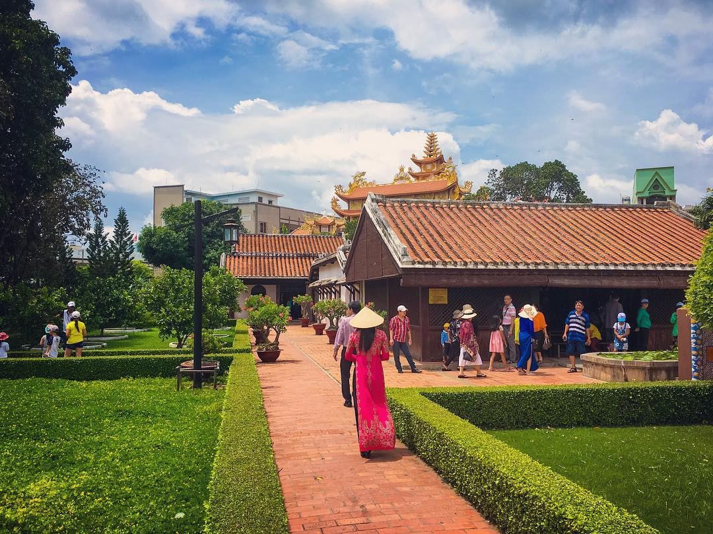
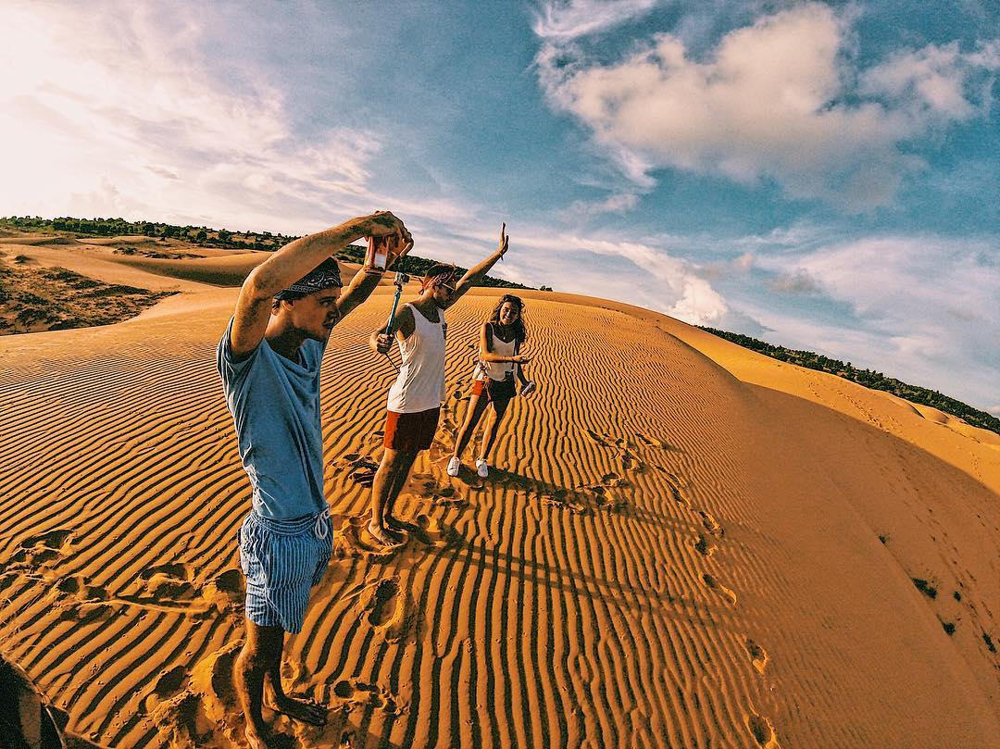

Trải Nghiệm Địa Phương
Đi Bụi Cùng Cheap
Du Lịch Phan Thiết - Mũi Né
Du lịch Phan Thiết từ trước đến nay luôn nổi tiếng với những bãi biển xanh trong và những đồi cát trải dài tít tắp. Nếu đang tìm kiếm một chuyến nghỉ ngơi ngắn ngày đến một thành phố biển xinh đẹp thì Phan Thiết là sự lựa chọn không thể tuyệt vời hơn.
1.Biển Đồi Dương
Nằm ngay trung tâm thành phố, biển Đồi Dương nằm ẩn hiện dưới những hàng dương xanh chắn sóng, như một vùng đất bí ẩn đang chờ du khách đến khám phá. Biển Đồi Dương không chỉ có biển xanh trong mà còn sở hữu một bãi cát rộng, phù hợp cho các hoạt động thể thao trên biển như bóng chuyền, đắp cát…
Địa điểm: Từ đại lộ Nguyễn Tất Thành đi thêm 1km nữa là đến
2.Trường Dục Thanh
Cũng là mùa mưa của Sapa nhưng đừng nghĩ mùa hè không phù hợp để du lịch Sapa. Đầu hè và cuối hè là hai thời điểm tuyệt vời để bạn thực hiện một chuyến du lịch Sapa tự túc, nếu bạn luôn say mê khung cảnh ruộng bậc thang hùng vĩ.
3.Đồi Cát Bayn
Cát từ lâu đã trở thành một “đặc sản” của Phan thiết và Đồi Cát Bay (hay còn gọi là đồi Hồng) chính là địa danh nổi tiếng nhất với những đụn cát cao, nối tiếp nhau. Một điểm thú vị của đồi cát này chính là màu sắc thay đổi theo khu vực, và có đến tận 18 màu tha hồ cho bạn khám phá.
Là thiên đường biển, nhiều gia đình hoặc nhóm bạn cũng lựa chọn du lịch Phan thiết cho kì nghỉ của mình. Nếu đang tìm kiếm một không gian rộng rãi, riêng tư, lại đầy đủ tiện nghi thì các villa ở Phan Thiết cũng là một sự lựa chọn đáng cân nhắc